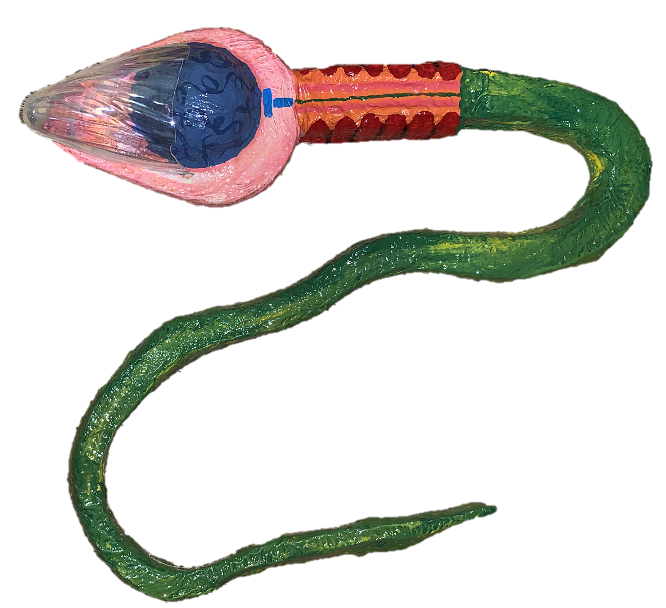
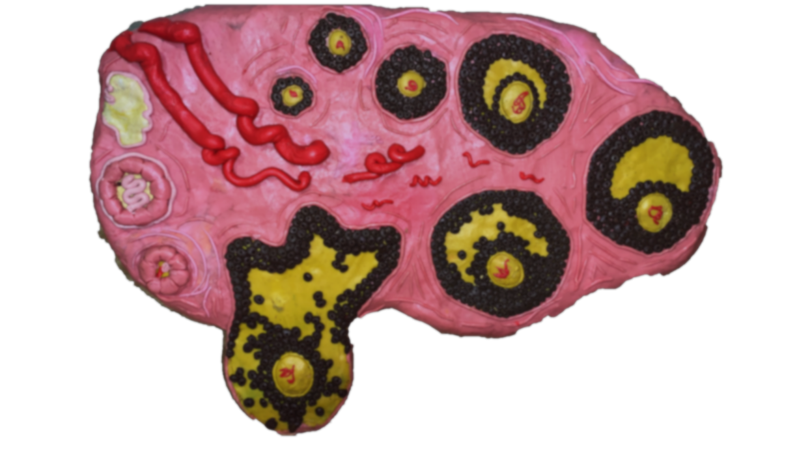
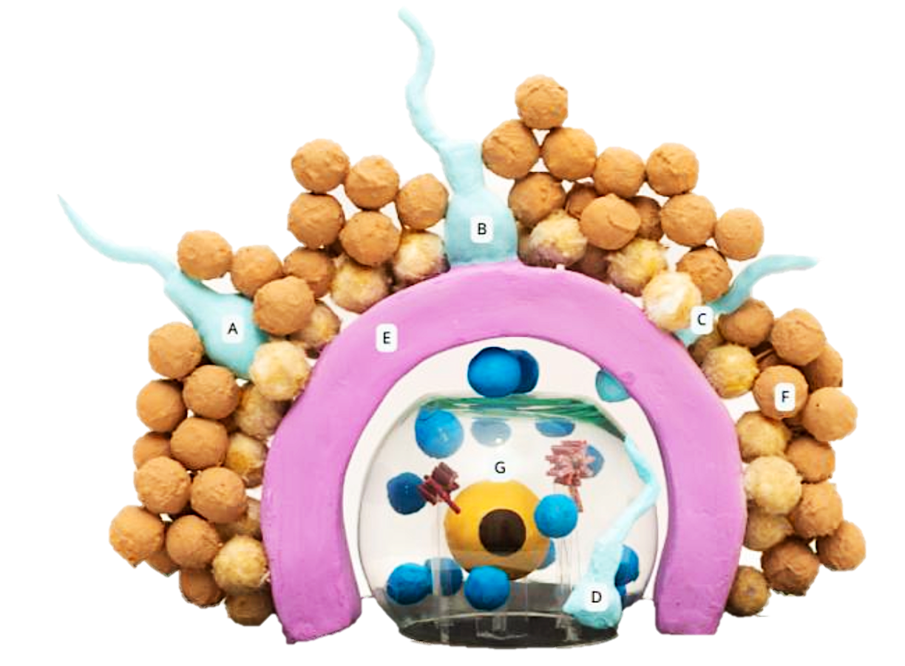
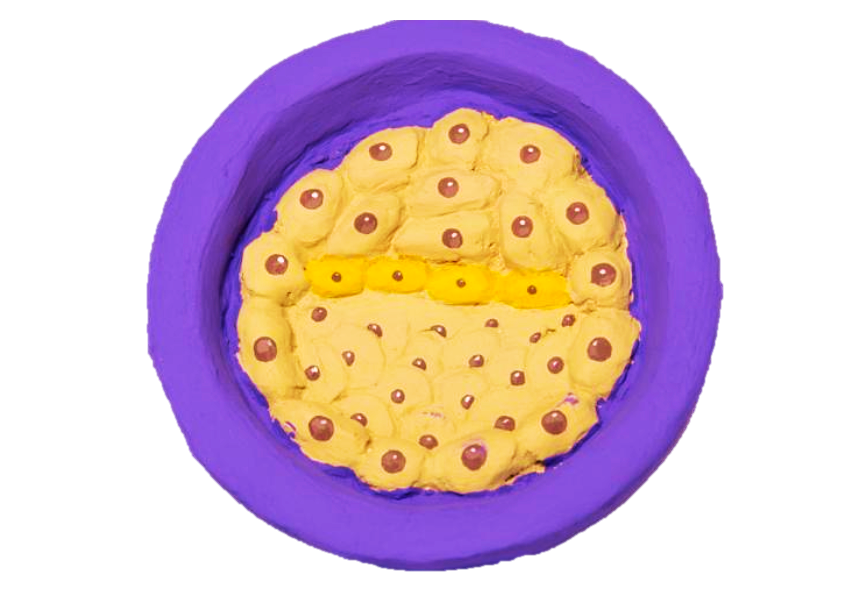
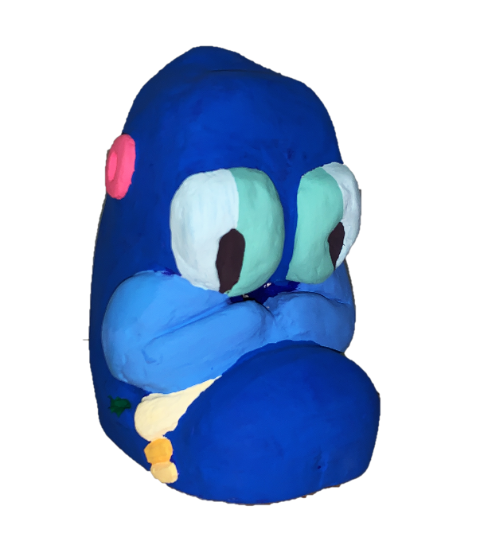

Las aventuras de
Juanito y Sofía
¿Cómo se forma un nuevo ser?
Capítulo uno
Gametogénesis y Fecundación

Fig. 1.2 — Juanito: A. Casco (acrosoma) · B. Cola (filamento axial) · C. Cabeza (núcleo) · D. Cuello · E. Piel (membrana celular)
¡Hola! Yo soy Juanito y soy un espermatozoide, soy tan pequeño que nadie puede verme a simple vista. Yo me formé en unos tubitos llamados túbulos seminíferos, que están dentro de los testículos de mi papá.
Vean, tengo una bella cola, un cuello y en mi cabeza un casco que se llama acrosoma. Después pasé por varios tubitos y al salir del testículo pasé al epidídimo, ahí recibí un entrenamiento especial para el gran momento de la fertilización.
Cuando estuve formado, en una eyaculación fui expulsado por la uretra del pene de mi papá, acompañado por muchos otros espermatozoides cubiertos de líquido seminal — juntos forman el semen.
Un hombre en edad reproductiva puede eyacular más de 100 millones de espermatozoides por mililitro de semen. En una eyaculación se expulsan de 2 a 3 ml, o sea aproximadamente 300 millones de espermatozoides. ¿Se imaginan? ¡¡Y Sofía me escogió a mí!!

Fig. 1.1 — Aparato Genital Masculino
A. Túbulos seminíferos · B. Túbulo recto · C. Red testicular · D. Conductillos eferentes · E. Epidídimo · F. Uretra
¡Hola!, ¿qué tal? Yo me llamo Sofía y soy un ovocito y vivo con muchos otros en el ovario de mi mami.
Mi historia inicia cuando mi mamá aún no nacía, primero fui ovogonia y en un futuro, podré llegar a ser un óvulo. Cuando mi mamá nació tuve de 600 a 800 mil hermanitas, pero muchas tuvieron mala suerte y murieron. Cuando mi mamá llegó a la pubertad, sólo quedamos 40 mil.
Mi casita se llama folículo y está formado por unas células parecidas a ladrillos. Me sirvió para protegerme, crecer y madurar. Mi casita es especial porque va cambiando con el tiempo y pasa por tres distintas etapas para su maduración.
Cuando mi mamá llegó a la adolescencia, durante la ovulación, yo saldré de mi casita protegida con una cubierta llamada zona pelúcida y por fuera una capa de ladrillos llamada corona radiada.

Fig. 2.1 — El nacimiento de Sofía. A–E: etapas de maduración folicular

Fig. 2.2 — Recorrido de Sofía por la Trompa Uterina
A. Ovario · B. Fimbrias · C. Infundíbulo · D. Ampolla · E. Istmo · F. Útero
Juanito y sus amigos, los espermatozoides, empezaron su gran aventura desde la vagina para llegar a su cita con Sofía. Primero bajaron del "camioncito" llamado semen — ese lugar es muy ácido y peligroso, pero por suerte el líquido seminal equilibró todo.
Cuando llegaron al útero, encontraron un moco pegajoso que atrapó a muchos espermatozoides. Pero en los días fértiles el moco era más suave y Juanito pudo seguir su camino valientemente.
Juanito sabía que debía ir despacio para madurar. Muchos de sus amiguitos querían llegar muy rápido, pero lo que no sabían es que no podrían fertilizar. Juanito tuvo que pasar por cinco retos:
En el primero, atravesó los ladrillos de la corona radiada de Sofía. En el segundo, intentó atravesar su zona pelúcida. En el tercero, al lograrlo, fue el primero en tocarla — ¡y los demás ya no pudieron acercarse! En el cuarto, cumplió la meta de su vida: ¡unirse a Sofía! Y así, en el último reto, Juanito y Sofía fundieron su amor en una sola célula para formar el cigoto — ¡ya es un nuevo ser! Lo llamaremos Pepito.
Fig. 2.3 — Juanito y sus amigos intentan llegar a Sofía
A. Esperm. atravesando la corona radiada · B–C. Intentando/atravesando la zona pelúcida · D. Logró atravesarla · E. Zona pelúcida · F. Corona radiada · G. Ovocito
⚠️ Dato clínico — ¡Pepito se perdió!
Cuando Pepito no puede seguir su camino hacia la cavidad del útero durante la primera semana, se puede producir un embarazo en un lugar diferente al útero, llamado embarazo ectópico. Esto puede causarle mucho dolor a su mamá y es muy peligroso.
Capítulo dos
Periodo Embrionario
Durante la primera semana Pepito se desarrolló dentro del útero. Primero era una célula (cigoto), después dos, y así se fue dividiendo. Cuando llegó a tener de 16 a 32 células, Pepito es una mórula — ¡parece una mora!
Luego las células se acomodan de nuevo y ahora se llama blastocisto. Al final de la primera semana, Pepito en forma de blastocisto entra a la cavidad del útero, donde busca un lugar para hacer su nido — implantarse.
Cuando Pepito está en su forma de blastocisto tiene células que formarán su cuerpo y otras que formarán la placenta, que le proporcionará un ambiente cómodo y seguro.

Fig. 5.1 — Primera semana
A. Cigoto · B. 2 blastómeros · C. 4 blastómeros · D. 8 blastómeros · E. Mórula · F. Blastocisto
Fig. 5.3 — Mórula
Pepito en su etapa de mórula — parece una mora
Fig. 5.4 — Blastocisto
Las células se reorganizan y Pepito busca su nido en el útero
En la segunda semana, Pepito tiene forma de disco doble: el primer disco es de color azul y el segundo disco es de color amarillo. Cuando Pepito hace su nido, atraviesa las capas del útero. Al mismo tiempo, el cuerpo de su mamá sufre cambios que la preparan para su desarrollo.
En la tercera semana, Pepito obtiene un tercer disco de color rojo. ¡De estos tres discos se formarán todos los órganos de Pepito! A la mitad de esta semana se forman los dos tubitos cardiacos que formarán su corazón. También comienza a formarse su sistema nervioso.

Fig. 6.1 — Segunda semana
A. Disco azul (epiblasto) · B. Disco amarillo (hipoblasto)
Fig. 7.1 — Embrión trilaminar
A. Disco azul · B. Disco rojo (mesodermo) · C. Disco amarillo
Semanas 4 a 8 — Organogénesis
Pepito sigue creciendo
Semana 4
Tamaño de una semilla de chíaComienzan a formarse las estructuras de su cara y cuello. Se desarrollan el tubo digestivo, pulmones, hígado y páncreas. Los dos tubitos cardiacos se unen en uno solo — ¡ya circula su sangre! Esta etapa es muy vulnerable; la mamá debe tener cuidados especiales.
Semana 5
Tamaño de un grano de arrozLos moldes que formarán su cerebro evolucionan hacia el sistema nervioso central. Comienzan las primeras estructuras del ojo, nariz y oído. Sus brazos tienen forma de aleta primero, luego de pala. El paladar empieza a desarrollarse.
Semana 6
Tamaño de una lenteja¡Si le hicieras cariños en la cara, ya los sentiría! Pepito ya tiene sensibilidad y movimiento. Se distinguen los codos y las manos. Empiezan a formarse sus deditos. Los ojos comienzan a pintarse de color oscuro.
Semana 7
Tamaño de un garbanzoEn su cara comienzan a formarse los párpados, aunque todavía están pequeños. Sus orejas empiezan a desarrollarse pero aún sin forma definitiva. Ya pueden verse los pezones. Los huesos comienzan a formarse y los dedos que antes estaban unidos empiezan a separarse.
Semana 8
Tamaño de un frijol¡La última semana en que Pepito se llama "embrión"! Su cabeza es casi la mitad de su tamaño. Ya tiene brazos y piernas y puede moverlos por sí solo. Sus dedos se han separado totalmente. Aún no puede saberse si es niño o niña.
Capítulo tres
Periodo Fetal
¿Saben qué? Pepito ya no es un embrión — ¡ahora es un hermoso feto! Su cabecita es grande y mide la mitad de su cuerpo. Su carita se ve ancha, con los ojos separados entre sí y cubiertos por párpados que aún están cerrados.
Semana 9
🍇 Tamaño de una uvaLas cuerdas vocales de Pepito empiezan a formarse — ¡hasta podría tener hipo! Su hígado comienza a trabajar para formar la sangre. Aunque sus piernas son más cortas que sus brazos, ¡está creciendo muy rápido!
Semana 10
🫒 Tamaño de una aceitunaSu cabeza es un tercio de la longitud de su cuerpo. Sus ojos se mueven hacia afuera mientras sus orejas encuentran su lugar. Su intestino ya está dentro de su pancita. ¡Esta semana Pepito empieza a tener uñas en sus manitas!
Semana 11
🫐 Tamaño de un higo¡Pepito ya hace gestos y mueve su cabeza! También puede realizar movimientos para respirar en un futuro y orinar dentro de su cavidad amniótica.
Semana 12
🍋 Tamaño de un limón¡Ha crecido casi el doble desde la semana 9! Su paladar ya está completamente terminado, su cuello bien definido. Ya tiene uñas en los dedos de sus manos. Ahora sabremos si Pepito es hombre o mujer gracias a sus genitales externos. ¡Y ya reconoce distintos sabores!
Pepito estaba muy feliz por haber cumplido doce semanas, pero sabía que su viaje podía tener dos posibles caminos. Podría seguir creciendo durante las próximas 26 a 28 semanas para convertirse en un bebé sano y listo para nacer. Pero también sabía que a veces, por diferentes razones, su desarrollo podría detenerse.
La historia de Pepito nos enseña algo muy importante: cada vida es única, como un cuento lleno de aventuras y sorpresas. No todos los viajes son iguales, y a veces el camino que seguimos puede modificarse — esto depende de muchos factores que están fuera de nuestro control.
Es importante cuidar de nosotros mismos y de los demás, con amor y respeto. Las mamás, los papás y todos los que rodean a una nueva vida tienen un papel especial, porque sus decisiones y cuidados hacen que esos viajes sean posibles.
Créditos Académicos
Obra original desarrollada por la Dra. Dora Virginia Chávez Corral, adscrita al Museo de Embriología “Dra. Dora Virginia Chávez Corral”, Universidad Autónoma de Chihuahua.
© 2025. Todos los derechos reservados.
El presente contenido ha sido elaborado con fines académicos y de divulgación científica. Cualquier uso, reproducción o adaptación deberá citar la fuente original.
Cita sugerida:
Dra. Dora Virginia Chavez Corral. (2025). Las aventuras de Juanito y Sofía.
Museo de Embriología “Dra. Dora Virginia Chávez Corral”,
Universidad Autónoma de Chihuahua.
¿Quieres aprender más?
Esta es la versión del cuento para público general. Si eres estudiante del área de la salud, te invitamos a explorar el contenido técnico completo del museo.